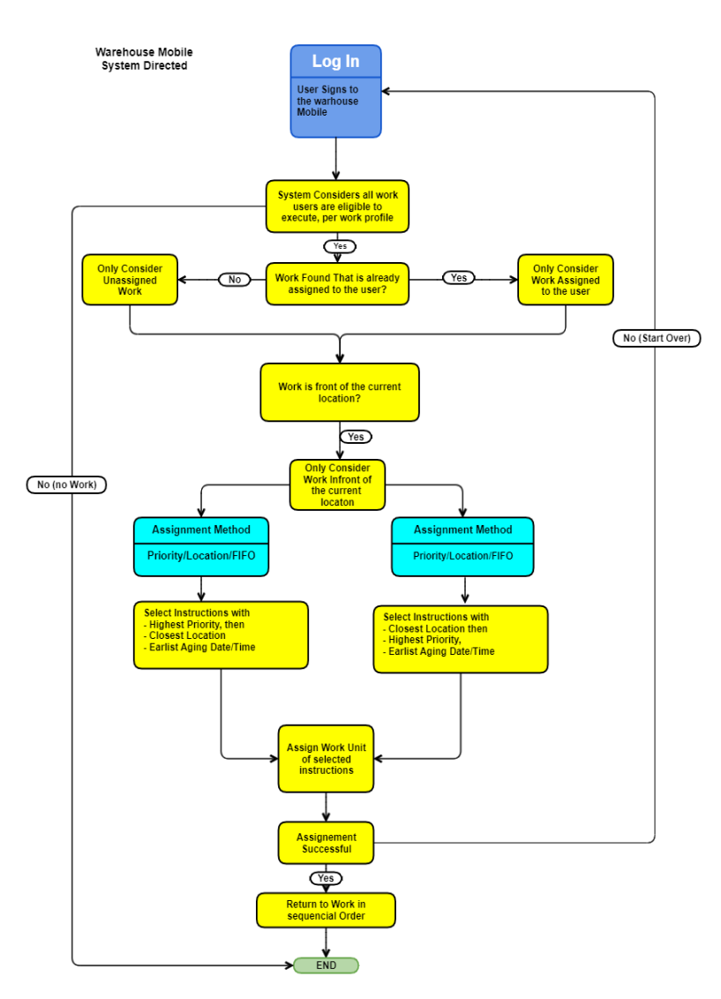

System will assign you a new work unit directly after you complete the pick/putaway of your currently-assigned work unit. If you want to stop processing work units in this session, you would need to perform a pass or full action. You typically will not be required to scan barcode or enter work unit to start the work. The system directed configuration enables the users to use directly start work assignment or rename work unit.
System now assigns the work units assigned to user automatically without the need to select the next work unit manually every time.
For example: We have one item with 10 work units assigned to the user. Select a work unit, scan the location, and then pick and putaway the item.
On Tapping the Go button, system will navigate you directly to the next eligible work unit, enabling the user to directly to pick and putaway the items directly. In case the user need to get back to the initiation screen, tap Pass action button to navigate back to initiation screen.
Sign in to your Warehouse Mobile screen and select the Work Execution. The system will display the Work Profile selection screen.
The following are scenarios describing the System Directed Work
The warehouse mobile screen, prompts user to scan location ID.
The system will look at the from location assignment method in the work profile to determine work to the user. For example, your assignment method is location/priority/FIFO. The system would first take into consideration your location in the warehouse when deciding which work unit to assign to you. For example, if you were currently standing in the bulk locations area, you would want the system to send you work that is located near this area. You could scan the location nearest to you so the system would send you work that was nearest your new location. If more than one available work unit is present at that location, the system will next look at the priority value of the work units.
If work is based on FIFO assignment method, then the system will prioritize the work instructions according to their creation date and time (aging date/time). The work instructions that were created earlier will be assigned first using the FIFO assignment method.
This configuration enables you to rename the existing work unit name.
For example, suppose your job is to pick items from an aisle location and place them in a P&D location at the end of the aisle. It is then another worker's job to continue processing on a work unit from that P&D location. So, you would have a roll of barcode stickers, where each sticker has a new work unit number on it. You would then scan a barcode into the Rename Work Unit Field, and press Go. The system will rename the next work unit it sends you as the value that you scanned into this field. The worker whose job it is to putaway from the P&D location then could just scan the barcode (with the new work unit ID on it) and continue the processing work that you started.
Note: The new name field cannot be left blank and is mandatory to enter a new name when renaming work unit has been initiated.
The system can process pick and putaway without entering the location. This feature is used when you need to do the job across the warehouse.
When wave has not created container for the work, then user can created a container during pick confirmation process.
This scenario occurs when a wave does not have shipping container created and Pick into Shipping container is selected in Work Profile.
Enables user to assign more than one work unit for picking.
Note: From location is enabled for multiple work unit assignment, system will display the Assign Work Unit screen.
Perform a multiple work units assignment by following steps
Notes:
If you scan a work unit and tap Go, the system will generate a group ID (after the first work unit assignment), and assign the work unit to this group. All subsequent work unit(s) assigned during this session will be associated with this group ID.
Tap Begin Picking,to view the Pick Confirmation screen:
If you action Cancel, the system will ungroup any assigned work units, and return you to the initial system-directed work initiation screen.
The following flows details on how the system determines the work unit is assigned to the user.
